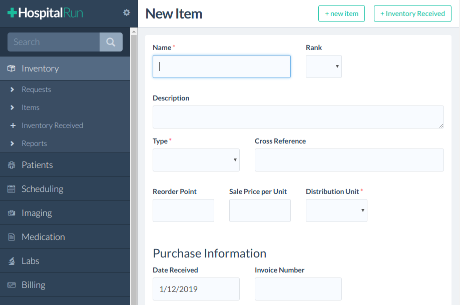

Personal Project - React Native Songbook
Although still in development, this mobile app will allow the user to import ABC notation music data and view it in the form of sheet music and guitar tab. It uses a local SQLite database which will be pre-loaded with songs from the Nottingham Dataset, a collection of free, open-source ABC music. It makes use of my abcjs-vexflow-renderer library to process and format the music.
Hours Spent: 150
Technologies: JavaScript, React Native, Android, SQLite, React Native Navigation, Metro
Links:
GitHub project page |
Components |
Database
Personal Project - Abcjs VexFlow Renderer

I started writing this code as part of my react-native-songbook project, then decided to break it into a separate library. This library takes the parser output of the abcjs library (for music formatted in ABC notation) and renders it to SVG using the VexFlow music engraving library. Writing this code myself allowed me to include specific features I wanted for my app, such as automatically-generated guitar tabs for each song. The repository includes a browser-based tool to view the output of the library and a unit test suite via Jest.
Hours Spent: 100
Technologies: JavaScript, abcjs, VexFlow, Jest, ESLint, Webpack, NPM
Links:
GitHub project page |
Library code
Open Source Contribution - Mattermost Chess Plugin
This plugin for the Mattermost group messaging app allows users to play chess against each other. It uses the chessboard.js and chess.js libraries. In addition to this, I have made some other PRs to the Mattermost project repos which are linked below.
Hours Spent: 40
Technologies: JavaScript, React, Redux, chess.js, chessboard.js, CSS
Links:
GitHub project page |
mattermost-webapp PR |
mattermost-plugin-demo PR |
Documentation fix PR |
Mattermost contributor coffee mug
{kind=link}
Benson Medical Instruments - Benson Cloud Services
Benson Cloud Services is a web application for storage and analysis of occupational health testing data. I was a developer on this project for 8 months and worked on the frontend, backend and SSRS reporting module.
Hours Spent: 1000
Technologies: C#, ASP.NET MVC, JavaScript (Dojo Toolkit), SQL (SSRS), SVN
Links:
YouTube video
Open Source Contribution - HospitalRun
HospitalRun is a hospital management application in JavaScript using Ember, CouchDB and Electron. I have made several contributions to this project.
Hours Spent: 300
Technologies: JavaScript, Node.js, CouchDB, Docker, Ember, Electron, QUnit
Links:
Ember fix |
Docker config |
Reviewing a PR |
Deprecation fix |
Bugfix and test cases |
Docker and Node.js config fix |
Bug report +
Fix |
Troubleshooting +
Fix +
Fix |
Electron config
Personal Project - Grateful Dead Music Player

I created this project to help myself learn React. It uses a public API to allow users to search and play music from archive.org's collection of public-domain Grateful Dead recordings. It also uses MongoDB to allow users to make an account and save certain recordings as favorites.
Hours Spent: 40
Technologies: JavaScript, React, Express, Node, MongoDB, Passport
Links:
Main app component |
Data grid component |
Express routes |
Certification - FreeCodeCamp Front End Development

The certification required me to complete of dozens of programming exercises.
Hours Spent: 100
Technologies: JavaScript, JQuery, Bootstrap, HTML, CSS, AJAX
Links:
Certification
Personal Project - Simon Game

This "Simon" game in JavaScript was an exercise I did for the FreeCodeCamp Front End Developer course.
Hours Spent: 12
Technologies: JavaScript, CSS, Bootstrap, JQuery, HTML.
Links:
CodePen
Personal Project - Tic Tac Toe Game

This "Tic Tac Toe" game in JavaScript was an exercise I did for the FreeCodeCamp Front End Developer course.
Hours Spent: 8
Technologies: JavaScript, CSS, Bootstrap, JQuery, HTML.
Links:
CodePen